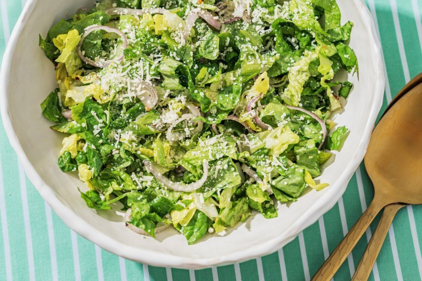

Žaliosios salotos su kietuoju sūriu
Ingredientai:
- 1 gūžė romaninių salotų (didesnės arba kitų mėgiamų salotų)
- 70 gramų kietojo sūrio (smulkiai tarkuoto)
- 2 vienetai šalotinių svogūnų (arba 1 rausvojo)
- 3 šaukštai alyvuogių aliejaus
- 1 šaukštas citrinų sulčių
- 1 žiupsnelis maltų juodųjų pipirų
- 1 žiupsnelis aitriųjų paprikų dribsnių (nebūtina)
Paruošimas
Paruošimo laikas: Apie 5 min.
- Raminę salotą postambiai supjaustyti. Svogūnus supjaustyti plonais žiedais. Viską sudėti į dubenį.
- Ten pat berti smulkiai tarkuotą kietąjį sūrį.
- Padažui paruošti mažame dubenėlyje sumaišyti alyvuogių aliejų, citrinų sultis, pipirus ir paprikų dribsnius.
- Padažą užpilti ant salotų, gerai permaišyti ir iškart patiekti.